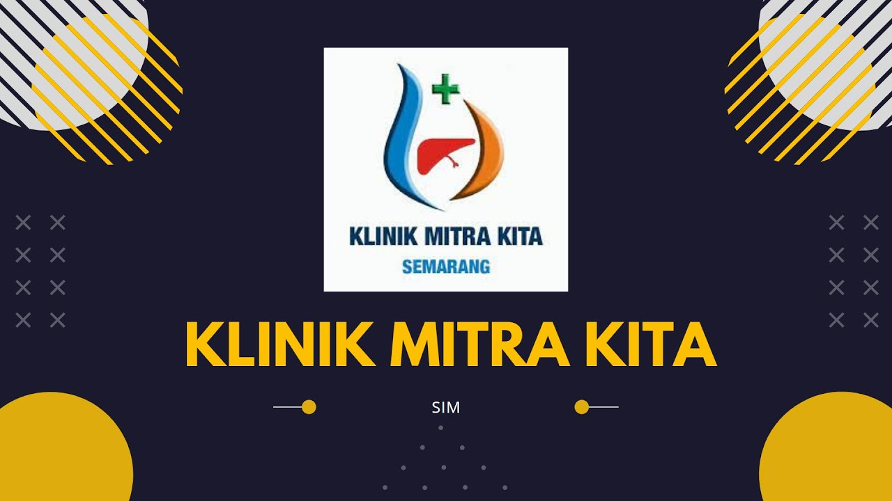

<html>
    <html lang="en">
<head>
    <meta charset="UTF-8">
    <meta name="viewport" content="width=device-width, initial-scale=1.0">
    <title>WEB ZIDAN</title>
</body>
</html>
    <head>
        <title>Layout</title>
        <body bgcolor="#eb7734">
            <table align= "center" border="0" width="900px">
                <!--header-->
                <tr bgcolor="#black">
                    <td colspan="2" height="90px"></td>
                    <!--tag dihilangkan-->
                </tr>
                <!--body-->
                <tr>
                    <td width="700px" height="400px" bgcolor="#cce6ff" valign="top">
                        <!--kolom body1-->
                        <table border="1">
                            <tr bgcolor="#d68829">
                                <td align= "center" width="200px"><a href=Artikel.html>Artikel</a></td>
                                <td align= "center" width="200px"><a href=Departement.html>Departement</td>
                                <td align= "center" width="200px"><a href=menu/produk.html>Produk</td>
                                <td align= "center" width="200px"><a href=Pendaftaran.html>Pendaftaran</td>
                                <td align= "center" width="200px"><a href=https://klinikmitrakitasemarang.com>Mitra Kita</td>
                            </tr>
                        </table>
                        <table align="center">
                            <tr>
                                <td align="center"><h2> Mengenal Cholangitis </h2></td>
                            </tr>
                            <tr>
                                <td align="center"></td>
                            </tr>
                            <tr>
                                <td> <p align="justify">Cholangitis adalah kondisi ketika terjadi peradangan pada saluran empedu, yaitu saluran yang menghubungkan hati dengan usus. Kondisi ini bisa terjadi ketika saluran empedu tersumbat atau terinfeksi bakteri. Cholangitis dapat menyebabkan kerusakan hati yang serius dan harus segera diobati.
                                            Seperti dikutip dari artikel tentang cholangitis yang dimuat di Journal of Clinical and Translational Hepatology, cholangitis adalah masalah serius yang mengancam jiwa yang mempengaruhi sistem hepatobiler. Sistem ini terdiri atas hati, saluran empedu, limpa, dan pankreas yang berperan dalam pencernaan serta penyerapan lemak dan pembuangan limbah dari dalam tubuh. Ketika sistem ini mengalami gangguan, dampaknya bisa fatal.
                                            Cholangitis bisa dikategorikan menjadi beberapa jenis, tergantung penyebab dan lokasi infeksi.<br/><b>Berikut ini beberapa jenis yang umum:</b>
                                            <br/> 1. Cholangitis sklerosa primer (PSC): jenis cholangitis autoimun kronis yang menyebabkan peradangan dan penyempitan pada saluran empedu. 
                                            <br/> 2. Cholangitis sklerosa sekunder (SSC): peradangan terjadi akibat kondisi medis lain, seperti batu empedu, tumor, atau penyempitan saluran empedu.
                                            <br/> 3. Cholangitis akut: jenis cholangitis ini berkembang dengan cepat dan biasanya disebabkan oleh infeksi bakteri pada saluran empedu.
                                            <br/> 4. Cholangitis kronis: jenis cholangitis ini berkembang perlahan dan berlangsung selama beberapa bulan atau bahkan bertahun-tahun.
                                            <br/> 5. Cholangitis pascapenyempitan (post-stenotic): cholangitis ini terjadi setelah adanya penyempitan pada saluran empedu, seperti akibat batu empedu atau tumor.
                                            <br/> 6. Cholangitis iskemik: penyebabnya adalah gangguan aliran darah ke saluran empedu.
                                            <br/> 7. Cholangitis obstruktif: pemicunya adalah sumbatan pada saluran empedu, seperti batu empedu atau tumor.
                                            <br/><b>Gejala awal cholangitis meliputi:</b>
                                            <br/> a. Kelelahan
                                            <br/> b. Kulit gatal
                                            <br/> c. Mata dan mulut kering
                                            <br/><b>Jika cholangitis sudah lama diderita, gejalanya bisa berupa:</b>
                                            <br/> a. Nyeri di bagian atas perut
                                            <br/> b. Berkeringat saat malam hari
                                            <br/> c. Pembengkakan kaki
                                            <br/> d. Nyeri otot
                                            <br/> e. Nyeri sendi
                                            <br/> f. Penumpukan lemak di area sekitar mata, kaki, lutut, dan siku
                                            <br/> e. Penurunan berat badan
                                            <br/><b>Penyebab Cholangitis :</b>
                                            <br/> 1. Batu empedu: batu empedu yang besar bisa memicu penyumbatan pada saluran empedu dan menyebabkan cholangitis.
                                            <br/> 2. Infeksi bakteri: bakteri bisa masuk ke saluran empedu melalui kandung empedu atau dari infeksi lain di tubuh, seperti infeksi saluran kemih, HIV, atau pneumonia.
                                            <br/> 3. Tumor: tumor pada saluran empedu atau pankreas bisa memicu penyumbatan dan cholangitis.
                                            <br/> 4. Kerusakan hati: kerusakan hati kronis bisa menyebabkan penyumbatan dan peradangan pada saluran empedu.
                                            <br/> 5. Gangguan autoimun: sistem imun yang keliru menyerang saluran empedu akan menyebabkan peradangan dan penyumbatan saluran empedu.</p>
                                 </td>
                            </tr>
                            </table>
                            </td>
                    <td align="center" width="200px" bgcolor="#d65129"><marquee>Selamat Datang Di RS Kariadi Semarang</marquee>
                        <hr width=200>
                        <table>
                            <tr>
                                <td bgcolor="#f59842" width="200" height="50" align="center" valign="middle"><a href=https://klinikmitrakitasemarang.com/about>ABOUT</td>
                            </tr>
                            <tr>
                                <td bgcolor="#f59842" width="200" height="50" align="center" valign="middle"><a href=https://klinikmitrakitasemarang.com/doctors>DOCTORS</td>
                            </tr>
                            <tr>
                                <td bgcolor="#f59842" width="200" height="50" align="center" valign="middle"><a href=https://klinikmitrakitasemarang.com/contact>CONTACT</td>
                            </tr>
                        </table>
                        <hr width=""
                        <body>
                            <p><b><center><H3>Call Center</H3> </center>
                            </b></p>
                            <ul>
                            </ul>
                        </body> 
                        <p align="center"> +62248413476
                        <body>
                            <HR WIDTH="200"
                            <p><b>Waktu Pelayanan</b></p>
                            <ul>
                            </ul>
                        </body>
                        <p align="center"> Senin-Sabtu 09.00 s.d 17.00
                        <body>
                        <hr width="200"    
                            <p><b>Fasilitas Medis</p>
                                </body>
                                <p align="center"> <li>Spesialis Khitan</li>
                                    <li>Spesialis Penyakit Dalam</li>
                                    <li>Spesialis Kesehatan Anak</li>
                                    <li>Medical Check Up</li>
                                </ul>
                        </body>
                        <p align="center"> Senin-Sabtu 09.00 s.d 17.00  
                    </td>
                <!--footer-->
                <tr bgcolor="#f59842">
                    <td align="center" colspan="2" height="120px">
                        <table border="0" cellpadding="10" cellspacing="12">
                            <tr>
                                <td>
                                    <ul>
                                        

                                    </ul>
                             </td>
                                <td>
                                    <iframe src="https://www.google.com/maps/embed?pb=!1m18!1m12!1m3!1d3960.20286754826!2d110.39500747514833!3d-6.9853675684076375!2m3!1f0!2f0!3f0!3m2!1i1024!2i768!4f13.1!3m3!1m2!1s0x2e708b376be27937%3A0xf2c31d4bd840f042!2sKlinik%20Mitrakita%20Semarang!5e0!3m2!1sid!2sid!4v1696824457093!5m2!1sid!2sid" width="200" height="150" style="border:0;" allowfullscreen="" loading="lazy" referrerpolicy="no-referrer-when-downgrade"></iframe>
                                    <!-- Masukkan kode peta Anda di sini, jika diperlukan -->
                                </td>
                                <td>
                                    <iframe width="200" height="150" src="https://www.youtube.com/embed/lEoNx6E6PpI?si=4PX--WalV6gaBf15" title="YouTube video player" frameborder="0" allow="accelerometer; autoplay; clipboard-write; encrypted-media; gyroscope; picture-in-picture; web-share" allowfullscreen></iframe>
                                </td>
                                <td>
                                    <iframe width="200" height="150" src="https://www.youtube.com/embed/03FuLfN91Q0?si=qxsqL2zQKBg3qzo9" title="YouTube video player" frameborder="0" allow="accelerometer; autoplay; clipboard-write; encrypted-media; gyroscope; picture-in-picture; web-share" allowfullscreen></iframe>
                                </td>
                         </tr>
                        </table>
                            <p>&copy; 2023 Nama Situs Anda. Hak cipta dilindungi undang-undang.</p>
                    </td>
            <!-- tag dihilangkan-->
                </tr>
            </table>
        </body>
    </head>
</html>